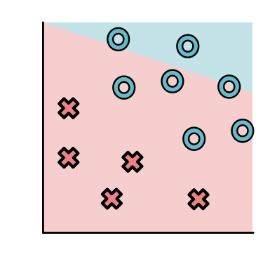
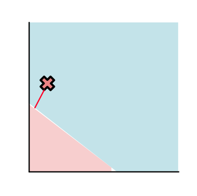
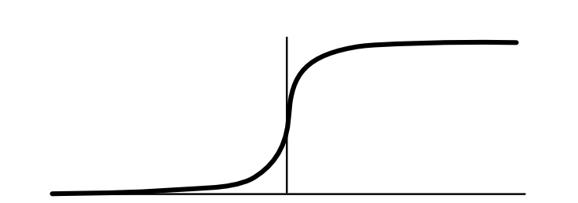
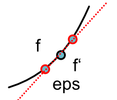

Machine Learning Engineering
Module 1.1
Learning With Derivatives
Review: Model

Review: Parameters
rotating the linear separator ("slope")

Review: Parameters
changing the separator cutoff ("intercept")

Math
Linear Model
def make_linear_model(w, b):
def model(x):
return 1 if (x[0] * w[0] + x[1] * w[1] + b > 0.0) else 0
return model
linear_model = make_linear_model([0.1, -0.2], 0.0)
linear_model(x)Lecture Quiz
Outline
Module 1
Model Fit
Derivatives
Model Fitting
Start
{kind=link}
Goal
Find parameters that minimize loss
Finalize a fixed model
Fitting
Field of optimization
Many, many different approaches
Our focus: gradient descent
Parameter Fitting
Compute the loss function, \(L(w_1, w_2, b)\)
See how small changes would change the loss
Update to parameters to locally reduce the loss
Step 1: Compute Loss
 {kind=link}
{kind=link}
Step 2: Find Direction
Step 3: Update Parameters

Hard Issues
Local update, may get stuck for some models
How much do we move?
Can we do better?
Easier Issue
How do we find good directions?
Derivatives
Function Notation
Derivative Notation
Multiple Arguments
Subscript indicates variable
Intuition: Derivative
Intuition: Derivative
Slope of tangeant line
Derivative Types
Symbolic Derivative
Issues
How do we handle higher-order functions?
def derivative(fn):
def inner(x):
...
return inner
d_f = derivative(f)Definition of Derivative: Geometry
Central Difference
Approximating Derivative
Derivative Types
Loss
Symbolic Derivative
Issues
How do we handle higher-order functions?
def derivative(fn):
def inner(x):
...
return inner
d_f = derivative(f)Definition of Derivative
Difference
Approximate limit with small value
Central Difference
Multipleargs Difference
Module-1
Module-1 Learning Objectives
Practical understanding of derivatives
Dive into autodifferentiation
Parameters and their usage
Module-1: What is it?
Numerical and symbolic derivatives
Implement our numerical class
Implement autodifferentiation
Module-1: Review
Review differentiation rules
Everything is scalars for now (no "gradients")
Module-1 Overview
5 Tasks
Task 1.1: Numerical Derivatives
Task 1.2: Scalars
Task 1.3: Chain Rule

Task 1.4: Backpropagation

Task 1.5: Classifier Training